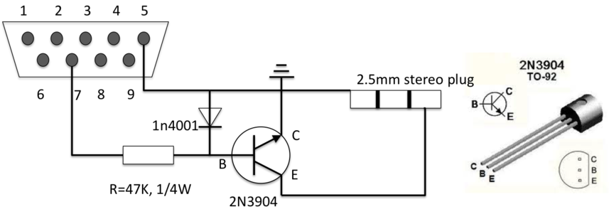
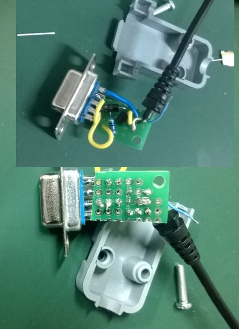

通过计算机串口控制相机快门
要做的一个实验中需要控制相机（Canon 单反 550d）每隔一定的时间自动拍照。靠人工按快门、快门线显然都不是可行的方式。利用计算机程序控制是最佳途径。网络搜索很快发现了解决方案：搭建一个简单的电路连接串口和相机快门接口，通过程序写串口状态来开启相机快门。
硬件：电路
最初搜索到的实现方案来自『天之文天文论坛』(http://bbs.astron.ac.cn/thread-3582-1-1.html) ，随后又找到国外天文网站给出的方案 http://www.beskeen.com/projects/dslr_serial/dslr_serial.shtml 。这两个方案基本相同，电路见下图。

因此需要准备的元件有：
- 9针串口接头
- 47 KΩ，1/4 W 电阻
- 1n4001 二极管
- 2n3904 三极管
- 2.5mm耳机插头
原理非常简单：Canon 相机预留了快门插孔（2.5mm耳机插孔），只要将耳机插头对应的1、3（底端和头部）接通，相机就启动快门拍照。接通时，电流从3流向1，即3的电位高于1。该电路的作用就是控制这两端的接通。根据三极管的原理，当 B 极电位高于 C，有电流从 B 流向 C 时，会有更大的电流从 E 流向 C，从而使快门插孔的 3 和 1 导通；反过来，当 B 电位低于 C 时，1 和 3 就无法导通。B 和 C 的电位高低由 串口的第 7 针（RTS）相对于第 5 针（GND）的电位高低决定。因此可以通过控制串口 RTS 端的状态实现快门的导通和断开。
电路中的 电阻和二极管的作用是限流和限压，当 B、C端的电压高于二极管的击穿电压时，二极管反向导通，从而保护三极管。
现在多数笔记本电脑都没有串口，连很多台式机也没有串口，此时需要用一根 RS232转USB的转接线。
软件：程序
硬件搭好后，要通过软件控制串口的输出。这个控制非常简单，就是改变串口 RTS 端的状态，很多的编程软件都很容易实现。因为对 Python 较熟悉，就用 Python 完成该试验。
为方便，可以采用一个现成的串口封装包 pySerial, 下载后安装（python setup.py install），然后在 Python 中 import，并打开相应的串口：
>>> import serial >>> c = serial.Serial(2) >>>
要先确认所用的串口序号（从设备管理器中查看），如果是 COM2，表示第二个 COM 口，则在 Python 中打开时采用的序号为 1（serial.Serial(1), 这里从0开始）。
要开启快门，需要将串口的 RTS 端从 False状态（低电平）改变为 True状态（高电平），然后再变回 False（不要长时间导通，以备下次开启）。但不能立刻从 True 变为 Fasle，变化太快会导致相机无法监测到。一个简单的开启快门程序为：
import serial
import time
c = serial.Serial(2)
def sht():
c.setRTS(True)
time.sleep(1)
c.setRTS(False)
sht()
电路和程序都非常简单，电路先在面包板上试好，再焊接到一块小的万能板上，塞到串口的接口盒中。
